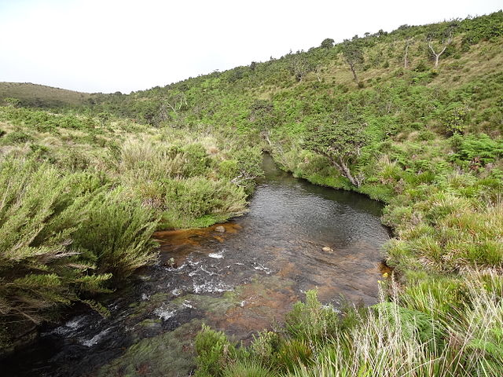
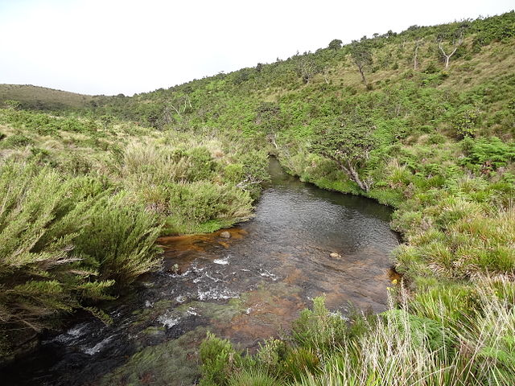

After breakfast, get fast drive to Nuwara Eliya
Ramboda Falls

Famous ceylon tea palace and tea museum and taste a best hot cup of Ceylon tea


Horton place and World's End


 

Hakgala Botnical Garden


Stay night in Nuwara Eliya
-